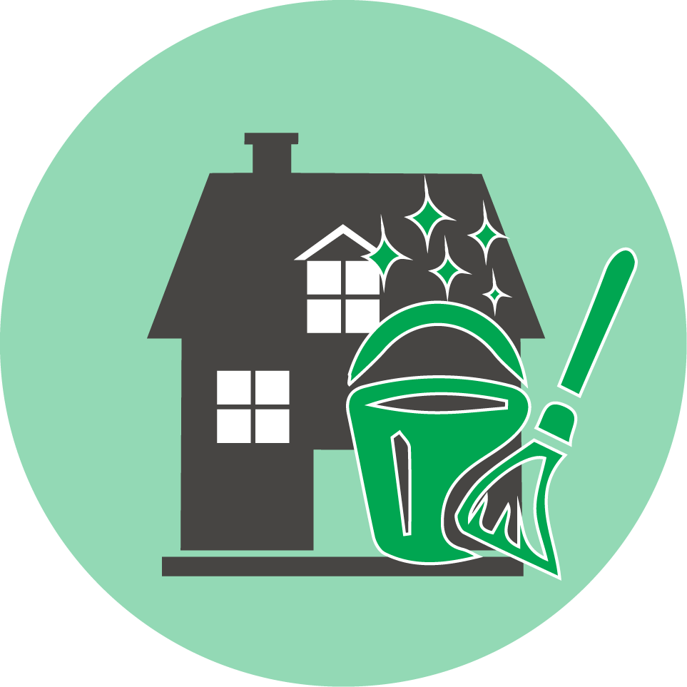
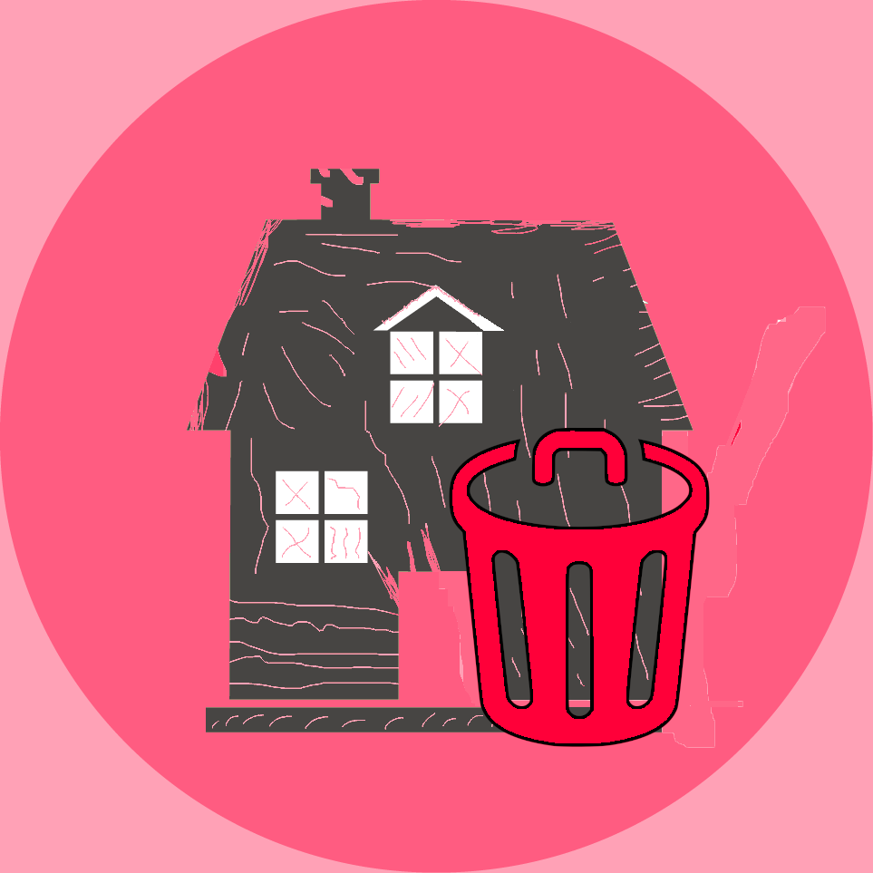

<ion-content [fullscreen]="true">
  <div class="contenedor">
    <button (click)="cerrarSesion()" class="cerrar-sesion">Cerrar Sesión</button>
    <button class="verde" (click)="activarLindo()" >
      
    </button>
    <button  class="rojo" (click)="activarFeo()" >
      
    </button>
  </div>
</ion-content>

